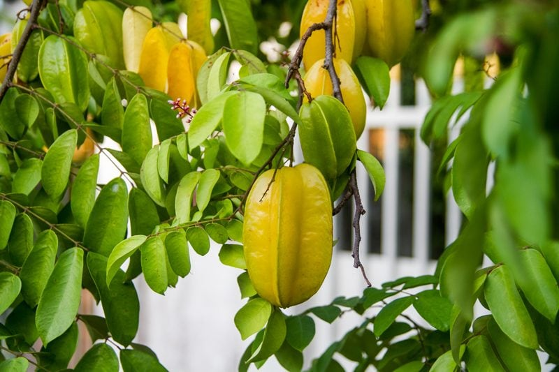
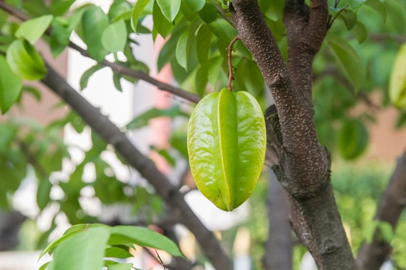
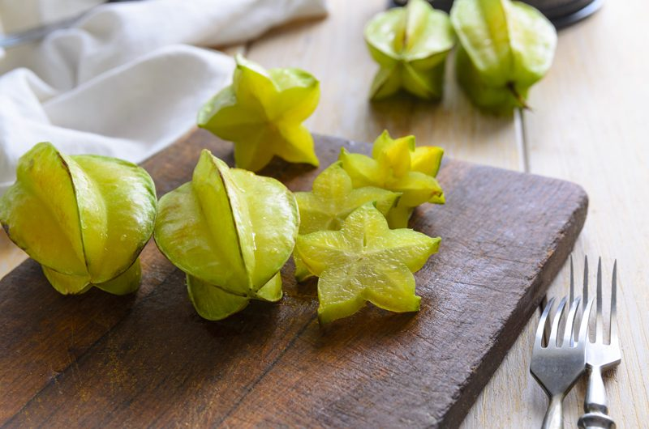

Starfruit – The Entire Fruit is Edible
I realize that not everyone has access to starfruit, in fact, it is limited where I live, but occasionally I get to partake of this beautiful fruit. If you are new to starfruit, the taste can be a complex flavor that may be tart or sweet, combining flavors of pineapples and lemons. The entire fruit is edible, except the seeds. Starfruit has a slightly waxy textured skin, and the inside flesh is firm, crunchy, and extremely juicy—quenching any thirst. Its high water content and high content of insoluble fiber makes this fruit easy to digest and helps maintain proper function of the bowels, speeding elimination time.

There are two varieties of starfruit, sweet and tart. The tart variety is smaller, used as a garnish and for the preparation of stews, curries, dishes made of poultry, fish, and seafood. This variety contains more oxalic acid than the sweet variety. So if you are sensitive to oxalic acid, be watchful to see how your body reacts with these. The sweet variety is eaten fresh, or it can be used for the preparation of juices, cocktails, jams, and sweet desserts.
Starfruit is grown in South Florida as well as other warmer southeastern and southwestern areas. They love full sun and like to be away from other trees, buildings, structures, and power lines. Along with warm temperatures, this plant needs well-drained soil, improved fertilization, and protection from the wind. Starfruit in these areas is harvested between June and February which means that some cultivars of starfruit can produce two to three crops per year.
The Starfruit Tree
Starfruit has a short trunk and a bushy, roundish crown. It can reach 25 to 30 feet in height and 20 to 25 feet in width. The fruit folds its leaves during the night and as a response to the vibration of the tree. Starfruit trees begin to produce fruit three to four years after planting. Mature trees can produce 200 to 400 pounds of fruit per year.
The Act of Pollination
Starfruit produces small, bell-shaped flowers that are arranged in clusters and that grow from the axils of leaves. The flowers are lilac colored and contain both types of reproductive organs. A wonderful attribute of the starfruit tree is that it blooms all year round. The flowers attract bees, which are responsible for the pollination of this plant. Soon after blooming and pollination, starfruits will begin to grow. They start out green, heading out towards a yellow color when ripe, covered with smooth, waxy skin on the surface. It has a crispy, juicy pulp and ten to twelve light brown edible seeds.

Harvest and Storage
- Harvesting occurs primarily from mid-summer to late fall.
- Wait for the green to fade completely to yellow and the skin to become waxy in appearance. Give the fruit a slight tug; it will easily slip from the tree once fully ripe.
- Starfruit is sweetest when they are allowed to fully ripen on the tree.
- If they are picked a bit too early, they will still ripen some. Store still green fruits for up to four weeks in the refrigerator or two weeks at room temperature. Use fully ripe star fruit immediately.
- The fruit needs to be handled carefully to avoid bruising and should be stored at about 50 degrees F.
Uses of the Star Fruit
- The fruit is a rich source of dietary fibers, vitamin C, vitamin B2, vitamin B6, vitamin B9 and minerals such as phosphorus, potassium, zinc, and iron. So start adding them into your diet!
- Starfruit will ripen at room temperature and develop brown lines on the edges of the fruit when they are ready to eat.
- The entire fruit is edible and is usually eaten out of hand, but it can also be used in cooking.
- They are eaten fresh and can be made into juice.
- The fruit is very attractive when sliced crosswise for a perfect star shape, and it is often used in fruit salads and as a garnish.

Non-Food Uses of the Star Fruit Tree
- The wood is white, becoming reddish with age; close-grained, medium-hard. It has been utilized for construction and furniture.
- Starfruit leaves and root are sometimes used in traditional medicine in the treatment of chickenpox, headache, and ringworm.
- The acid types of starfruit have been used to clean and polish metal, especially brass, as they dissolve tarnish and rust.
- The juice will also bleach rust stains from white cloth.
- Unripe fruits are used in place of a conventional mordant in dying.
Caution for those with Renal Disorders:
People diagnosed with renal disorders should avoid starfruit because it contains oxalic acid, which facilitates the formation of kidney stones.
© AmieSue.com